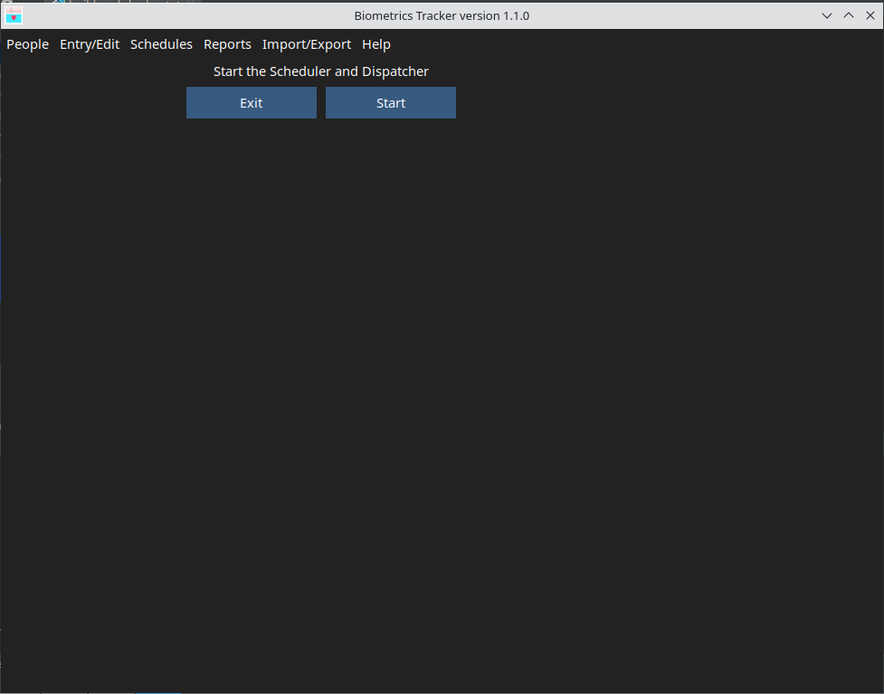
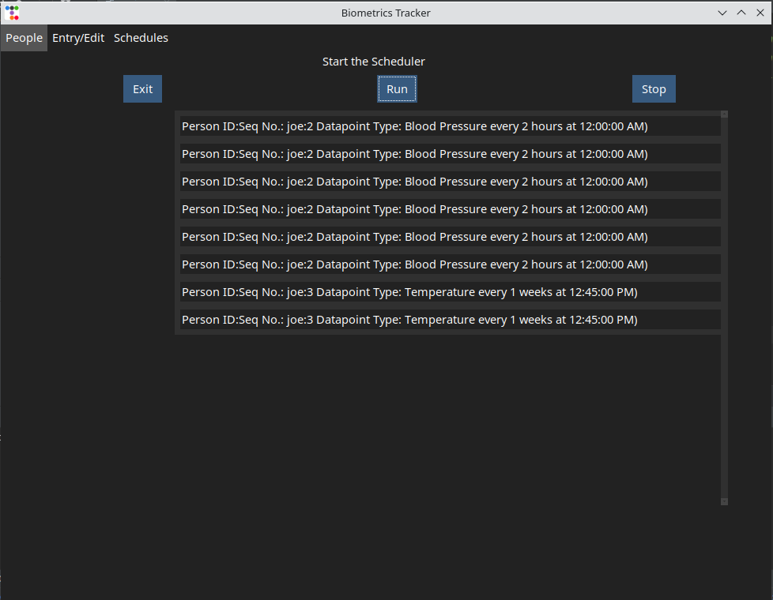
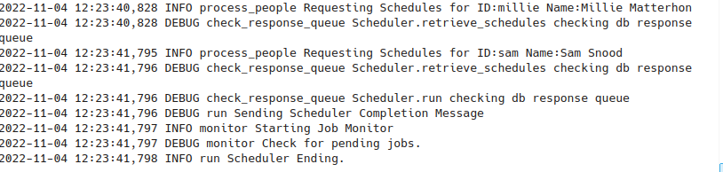

The function examines the schedules entered for each person tracked by the application and submits one or more time-triggered task to start an entry session for each schedule approaching a trigger point. You can get a preview of the events to be scheduled by using the function. Selecting the menu option will display the GUI shown below:
Click the button to start the Scheduler process. After a short time, a list of events schedules will be displayed on the lower portion of the GUI as shown below.
As mentioned above, after entry session tasks have been submitted, a background process is initiated to monitor the tasks and initiate each one when its appointed time comes. If you wish to stop this background process, click the button.
Because most of what the Start Scheduler process does is unseen, it posts its actions to log file. This file is created in the biometrics-tracker/logs folder located in your home folder. An example log file is shown below.
